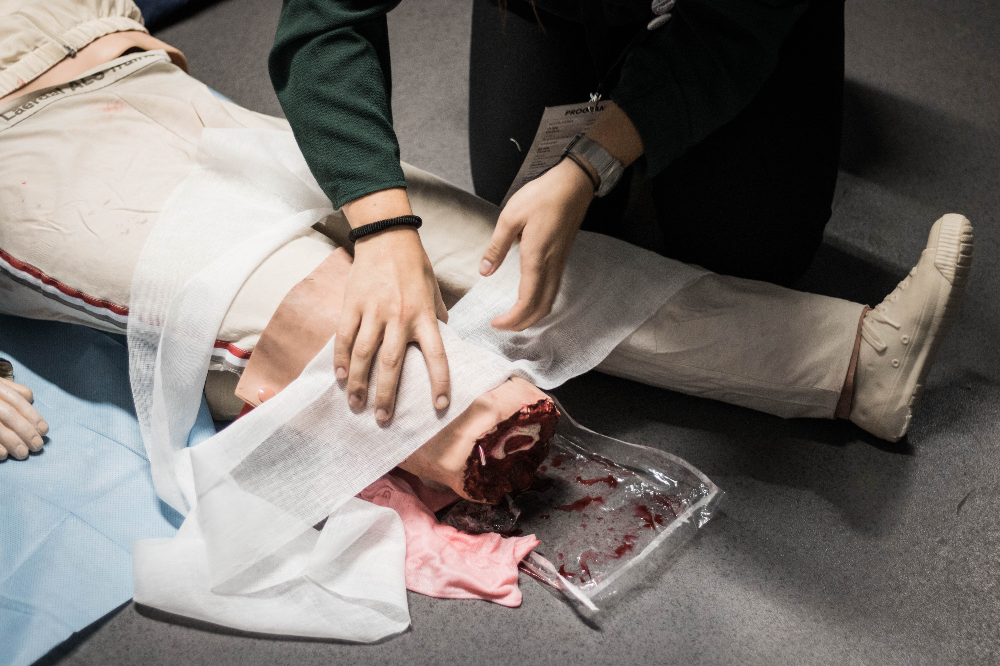

SHE Report
- Incident Summary
- Near Miss Summary
- Organization
- Education
- On-Site Safety Inspection by SHE Team
- On-Site Safety Inspection by Other Team
- ASSA Excution Record
- Safety Analysis of Sub-Contractor
Incident Summary

No Pjt Classification Type Summary of Accident Date 요일 시간 EPC Sub-Contractor 비고
- 1단계 Fatality 낙하 T-203 타워크레인 2호기 철근자재 인양 중 와이어 파단으로 하부작업자 협착 2013-09-08 일 8:40 GS건설 어드밴건설
- 1단계 경상 (3일-4주) 신체반응 T-203 철근 작업시 철근버팀대에 적재된 철근이 처져서 상부작업자 요추 염좌 2013-11-11 월 10:00 GS건설 어드밴건설
- 1단계 경상 (3일-4주) 전도 LPG Tank 철근상부 이동시 발빠짐으로 전도되어 왼쪽 손목 골절(실금) 2014-11-09 일 15:00 GS건설 어드밴건설
- 1단계 First Aid Case 전도 주배관 AREA 카고크레인 탑승 중 미끄러짐 사고 2015-01-25 일 N/A GS건설 에이치플러스에코 First Aid
- 1단계 First Aid Case 전도 T-202 Large Opening Support 설치 작업 중 하부의 지그를 밟아 발목을 접지름 2015-02-05 목 15:30 GS건설 GS네오텍 First Aid
- 1단계 First Aid Case 협착 GS네오텍 SHOP장에서 크레인으로 철판(스티프너) 인양 중 철판에 손가락 끼임 2015-03-01 일 13:00 GS건설 GS네오텍 First Aid
- 1단계 중상 (4주이상) 협착 대아이엔씨 SHOP 장에서 보온 함석 절단기 테스트 중 기어부분에 팔이 끼임 2015-04-03 금 15:05 GS건설 대아이엔씨
- 1단계 경상 (3일미만) 전도 창운 Jetty Area 덤프 신호수 전도 사고로 왼팔 골절 2015-04-17 금 11:30 GS건설 창운
- 1단계 경상 (3일미만) 반복적 동작 T-202 동일산업 SHOP T-204구간에서 GRP 접합작업을 반복하여 팔목 통증 2015-02-10 화 N/A SK건설 동일산업
- 1단계 경상 (3일미만) 전도 T-202 Roof 성도이엔지 단관파이프 운반 중 미끄러짐 사고 2015-05-06 수 16:35 GS건설 성도이엔지
- 1단계 경상 (3일미만) 전도 창운 철근가공장에서 철근 운반 중 바닥의 목재에 걸려 전도되어 틀니 손상 2015-07-09 목 11:50 GS건설 창운
- 1단계 경상 (3일미만) 협착 T-201 Roof 상부 소방라인 설치 중 6인치 파이프에 우측 중지 협착 2015-08-19 수 11:30 SK건설 GS네오텍
- 1단계 경상 (3일미만) 전도 T-201 Roof Cable Tray 상부에서 용접작업 중 Cable Tray 사이에 발빠짐으로 요도 충격 2015-08-26 수 10:40 SK건설 세안이엔씨
- 1단계 경상 (3일미만) 협착 GS네오텍 윈치 손가락 협착사고 2015-10-07 수 17:50 SK건설 GS네오텍
- 1단계 First Aid Case 충돌/접촉 Process Area 서측 배수로 구간에서 그라인더 덮개 조정 중 창상사고 2015-12-09 수 10:40 GS건설 창운 First Aid
- 1단계 경상 (3일미만) 전도 Process Area 제설작업을 위해 이동 중 미끄러져 팔목 부상 사고 2015-12-17 목 10:00 GS건설 창운
- 1단계 First Aid Case 전도 DHI 보온공 이동 중 미끄러져 단관파이프 단부에 부딪힘 2016-02-22 월 10:10 GS건설 DHI First Aid
- 1단계 First Aid Case 충돌/접촉 주배관 AREA 신보령야적장에서 배관 그라인더 작업 중 손잡이에 타격 2016-04-12 화 14:40 GS건설 에이치플러스에코 First Aid
- 1단계 First Aid Case 협착 체인블럭 후크와 밸브 사이에 손가락 끼임 2016-10-17 월 9:50 GS건설 성도이엔지 First Aid
- 2-1단계 First Aid Case 전도 크롤라크레인 해체작업시 이동 중 미끄러짐 2016-10-22 토 13:35 SK건설 GS네오텍 First Aid
- 2-1단계 경상 (3일-4주) 전도 T-204 Ring Beam 철근 상부 작업 중 좌측 발 빠짐 2017-04-26 수 11:00 GS건설 어드밴건설
- 2-2단계 경상 (3일-4주) 협착 T-205 철근절곡기 손가락 협착 2018-09-02 일 15:20 GS건설 어드밴건설
- 2-1단계 경상 (3일-4주) 전도 PIPE RACK 상부에서 Tray Cover 설치 작업 중 미끄러져 회음부 부딪힘 2018-11-27 화 10:20 SK건설 동화
- 2-1단계 경상 (3일-4주) 전도 2인1조 파레트 운반 중 발이 걸려 넘어짐 2019-08-07 수 13:00 SK건설 동화 First Aid
- 2-2단계 경상 (3일-4주) 충돌/접촉 미장작업 중 쪼그려앉는 과정에서 사타구니 충돌 2019-12-13 금 16:50 SK건설 대륙종합건설
- 2-2단계 First Aid Case 전도 수직철근 로프 당김 작업 중 후방으로 전도 2020-04-03 금 13:30 SK건설 대륙종합건설 First Aid
- 2-2단계 First Aid Case 화상 Pin Plate Marking 작업 중 용접불꽃에 의한 손목 부위 화상 2020-05-08 금 16:15 GS건설 DHI㈜-보냉 First Aid